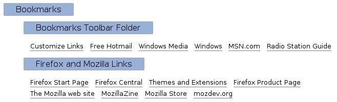
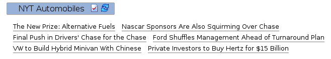
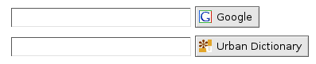
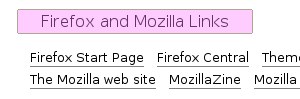
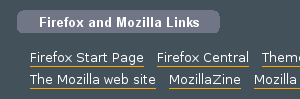

My Portal is Firefox extension that creates a live web page of your
bookmark hierarchy. Leave My Portal open in a tab to easily browse,
search, and open your bookmarks and live bookmarks.

Access My Portal through the menu or by browsing to myportal://. Change the root folder by
clicking on a folder's name. Open directly to a specific folder by
bookmarking the folder's myportal:// URL.
Like on normal web pages, left-clicking a link opens the link in the
current tab, and middle-clicking a link opens the link in a new tab.
Right-clicking a folder name displays a popup menu with options to
open the folder's contents in new windows or tabs.
My Portal distinguishes bookmarks that have been visited within the
past week by displaying them in a larger font:
Changes to bookmarks are reflected immediately—it is unnecessary
to reload My Portal.
Icons next to the folder name distinguish live
bookmarks from normal folders. Click the check mark icon to mark
the live bookmark's contents as read. Live bookmarks reload
automatically, but clicking the reload icon forces the live bookmark
to reload immediately. Right-click on a live bookmark's name to see a
popup menu with more actions.

Quick searches appear as a textbox and a submit button. To search,
type a search term in the textbox and then either press enter or click
the submit button. Shift-click the submit button to open the search
in a new window. Middle-click the submit button to open the search in
a new tab.

Edit a bookmark's properties by right-clicking the bookmark and
selecting from the popup menu.
Customize My Portal's appearance and behavior by double-clicking its
entry in the Extensions window:


Firefox 1.5.0
This extension was inspired by the My Portal feature in the Galeon web browser.